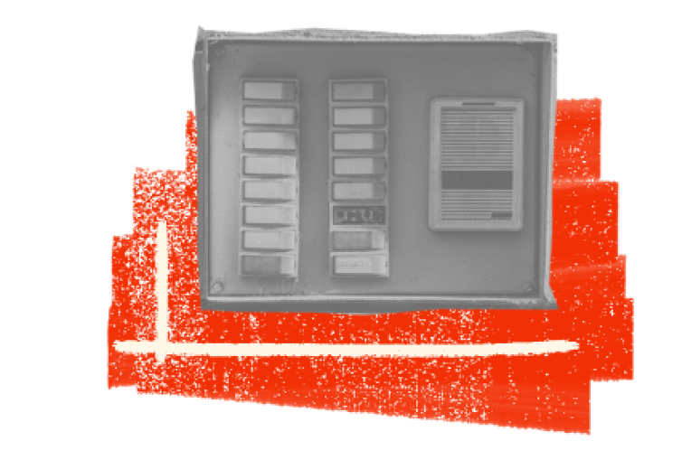
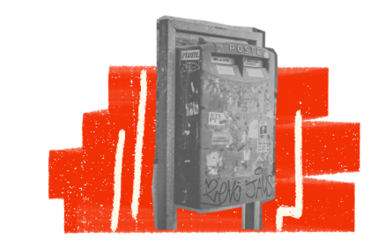
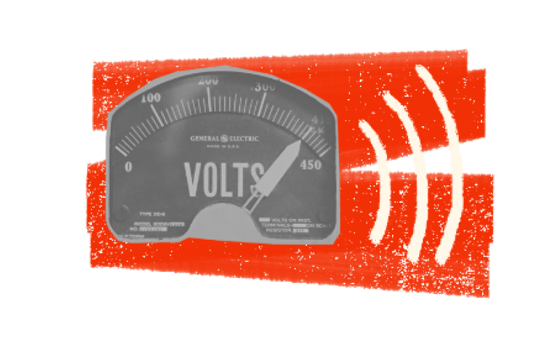

I nostri valori


Territoriale
Il sentimento di appartenenza con il territorio e la sua comunità.
Autentico
L’originalità e unicità del prodotto, legati ai suoi valori storici, artistici e culturali.

Etico
La produzione su richiesta, per un consumo più consapevole e sostenibile.

Dinamico
La scoperta di nuove realtà artigiane, tramite attività in continuo aggiornamento.